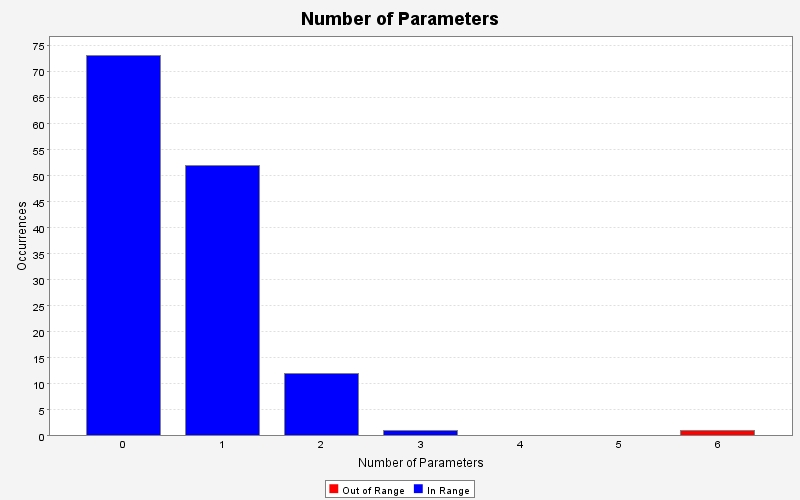
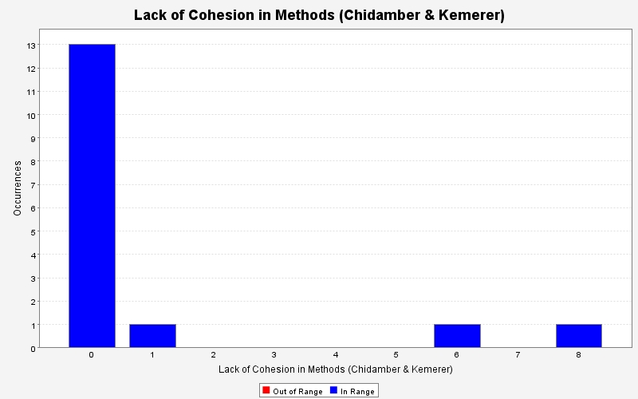
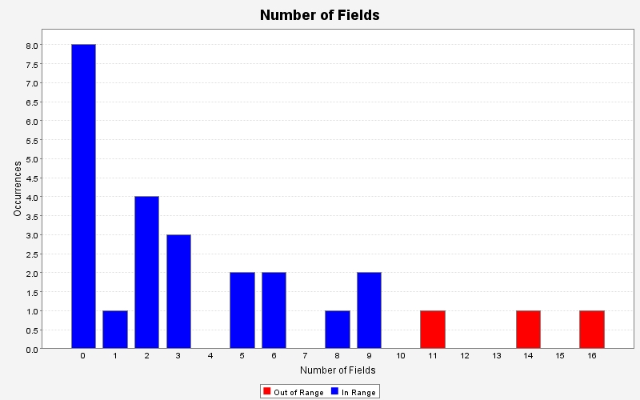

Dashboard
Produced by
State Of Flow
Eclipse Metrics
on Fri May 02 00:11:19 EDT 2008
Index
Cyclomatic Complexity
Lines of Code in Method
Number of Levels
Number of Parameters

Number of Statements
Efferent Couplings
Lack of Cohesion in Methods (Chidamber & Kemerer)

Lack of Cohesion in Methods (Henderson-Sellers)
Lack of Cohesion in Methods (Total Correlation)
Number of Fields

Weighted Methods Per Class
Produced by
State Of Flow
Eclipse Metrics
on Fri May 02 00:11:19 EDT 2008